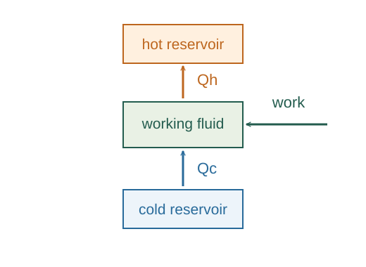

Derive Carnot refrigerator performance
For a refrigerator the useful output is extracted cold-reservoir heat, and the required input is work.
What the symbols mean
Qc > 0: heat extracted from cold reservoir; Qh > 0: heat delivered to hot reservoir; Win > 0: work input.
When this applies
Cyclic refrigerator between two fixed-temperature reservoirs; reversibility for the maximum performance.

Define the desired effect per cost
For a refrigerator the useful output is extracted cold-reservoir heat, and the required input is work.
Balance energy over the cycle
The working substance returns to its initial energy. Heat discharged equals heat removed plus supplied work.
Use the reversible heat ratio
A reversed Carnot engine has the same heat-magnitude ratio Qc/Qh = Tc/Th.
Go deeper at this stepWhy is the Carnot heat ratio universal?Why the reversible Clausius cyclic integral is zeroEliminate heat magnitudes
Substitute the heat ratio in Win = Qh − Qc and divide Qc by the result.
Where each equation comes from
Derived equations link to an argument below. Definitions, physical postulates and constitutive models are identified as the inputs of that argument.
Derivation of the main resultDerived result
Conditions: Cyclic refrigerator between two fixed-temperature reservoirs; reversibility for the maximum performance.
- Define the desired effect per cost. For a refrigerator the useful output is extracted cold-reservoir heat, and the required input is work. Explain the equation used in step 1 ↗
- Balance energy over the cycle. The working substance returns to its initial energy. Heat discharged equals heat removed plus supplied work. Explain the equation used in step 2 ↗
- Use the reversible heat ratio. A reversed Carnot engine has the same heat-magnitude ratio Qc/Qh = Tc/Th. Explain the equation used in step 3 ↗ Why is the Carnot heat ratio universal? ↗
- Eliminate heat magnitudes. Substitute the heat ratio in Win = Qh − Qc and divide Qc by the result. Explain the equation used in step 4 ↗
Equation in step 1Definition
Definition. This relation is an explicit input at this level of the model, rather than a result proved by the equations that use it.
For a refrigerator the useful output is extracted cold-reservoir heat, and the required input is work.
Scope: Cyclic refrigerator between two fixed-temperature reservoirs; reversibility for the maximum performance.
Equation in step 2Derived result
What is being shown: Balance energy over the cycle
The working substance returns to its initial energy. Heat discharged equals heat removed plus supplied work.
Earlier results used in this argument:
- COP ≡ Qc/Win (Definition)
Equation in step 3Derived result
What is being shown: Use the reversible heat ratio
A reversed Carnot engine has the same heat-magnitude ratio Qc/Qh = Tc/Th.
Earlier results used in this argument:
- COP ≡ Qc/Win (Definition)
- Qh = Qc + Win (Derived result)
Equation in step 4Derived result
What is being shown: Eliminate heat magnitudes
Substitute the heat ratio in Win = Qh − Qc and divide Qc by the result.
Earlier results used in this argument:
- COP ≡ Qc/Win (Definition)
- Qh = Qc + Win (Derived result)
- Qh = Qc Th/Tc (Derived result)
A worked example
For reservoirs at 270 K and 300 K, reversible COP is 9. Removing 900 J needs at least 100 J of input work in this ideal model.
Derivation behind this calculation ↗A point to keep straight
COP can exceed one because heat moved is not the same thing as work created. Temperatures must be absolute.
Check the assumptions and derivation ↗